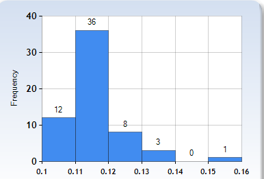
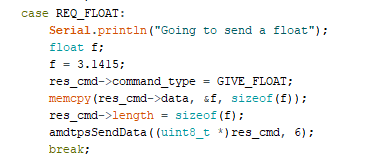
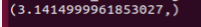
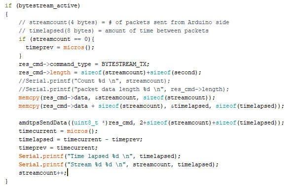
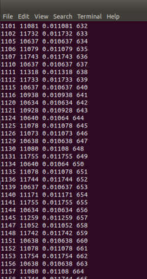
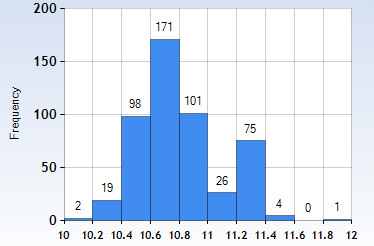
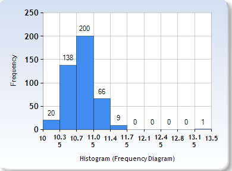
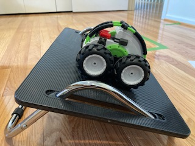
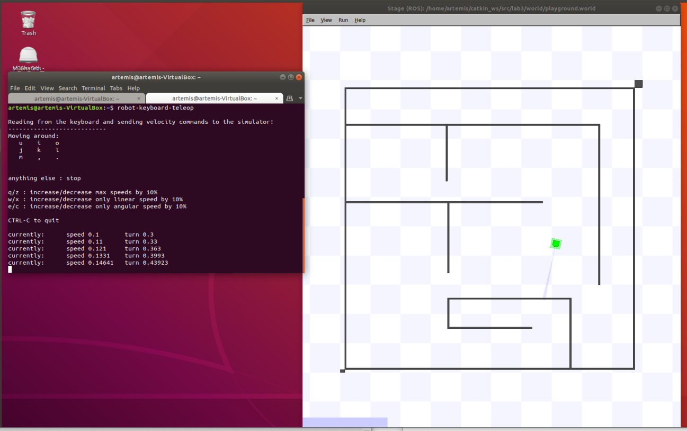

Hi! I'm a junior in ECE and I'm not quite sure what area I'm going to pursue but I have interests in power, optics, and also robotics. I rock climb in my free time (or I did before COVID) and like hiking as well.
Robot
Beep Boop
About
Location
Collegeville, PA (Working from home though the CEI Lab is located at Cornell University, Ithaca NY)
Focus of the Class
Systems level design and implementing dynamic autonomous robots
Goals
Designing a fast autonomous car and exploring dynamic behaviors, acting forces, sensors, and reactive control on an embedded processor
Lab 1
Artemis Setup
The purpose of this lab was to get set up and familiar with the Arduino IDE
and the Artemis board. After this lab, I was able to program your board,
blink the LED, read/write serial messages over USB,
display the output from the onboard temperature sensor,
measure the loudest frequency recorded by the Pulse Density Microphone,
and run the board using a battery instead of my computer.
I was able to successfully connect to the Artemis Nano module and run the Blink Example.
I ran the Example2_Serial script and confirmed that the serial port was working.
I also ran the analogRead example and could read out the voltage and temperature of the module.
The Example1_MicrophoneOutput script allowed me to read the loudest frequency on the serial port. I demonstrated by snapping my fingers (I sadly have the inability to whistle so I did that instead).
Lastly, I modified the microphone script in order to cause the LED to turn on when it recognized a loudest frequency value of above 4000.
Date: September 10, 2020
Lab 2
Bluetooth Communication
Materials/Code Needed
1 x SparkFun RedBoard Artemis Nano
1 x USB A-C cable
1 x Bluetooth adapter
Distribution code
This lab involved testing the low-latency, moderate-throughput wireless communication between the Artemis board and a computer via Bluetooth LE.
The main files to be modified for this lab were ECE_4960_Robot.ino, which was the Arduino sketch to be uploaded, and main.py, which was the Python Bluetooth example.
I first plugged in my Artemis board with my USB-C cable and then set up the USB passthrough to my Ubuntu VM through the VirtualBox Extension Pack and also installed Bleak, a GATT client software capable of connceting to BLE devices.
After setting up the USB passthrough, I was able to download the distribution code and run the ECE_4960_Robot.ino file for with the Arduino IDE and then the main.py to try to discover my robot,
caching the address "66:77:88:23:BB:EF" to Settings["cached"] in settings.py. I noticed sometimes
the Bluetooth will fail to communicate, and in that case, I just turn off and turn back on Bluetooth under "Settings" in my VM, which
usually resolves the issue.
Here's a screenshot of the Serial Monitor of the Arduino side:
In the distribution code, command.h includes a 99-byte structure (cmd_t) with the first byte as the command type, the second as a length, and the rest as data.
Initially, to check my connection with the robot, I had to run await theRobot.ping() in the asynchronous function myRobotTasks()
I was able to successfully discover my robot after configuring the Bluetooth and the received output was a bunch of print-out statements confirming the ping (and pong) as well as the round trip latency.
On average, the round-trip latency looked to be around 0.114 seconds.
Also, as shown in the screenshot and by what I observed by graphing the latencies for 60 pings,
this seemed to be fairly consistent throughout all the pings, with most falling between 0.11 and 0.12 seconds.

This is definitely slower than our baud rate of 115200 symbols/sec.
Requesting a float
To request a float, on the Python script side, I first commented out await theRobot.ping() and instead used await theRobot.sendCommand(Commands.REQ_FlOAT).
In the Arduino sketch, I wrote the code shown below that the script jumps to when it receives the REQ_FLOAT case.
There's a data structure called res_cmd with three fields:
data (the data(float) to send),
command_type (in this case, it's GIVE_FLOAT which the Python side will recognize and then print the float),
and length (which is the length of the data).
I put in the values for the command type and length as described, and then used
memcpy(dest adr, src adr, size of data), a function suggested on Campuswire, to put in a float that starts at res_cmd->data
I was then able to use amdtpsSendData((uint8_t*)res_cmd, 6) to send the float, using 6 for the second field because
it's the size of a float (4 bytes), the length (1 byte), and the command type (1 byte).

Through the simpleHandler on the Python side, I was able to unpack the float I sent.
The main.py program recognized the command_type to be GIVE_FLOAT I sent
from the Arduino side, and unpacked the bytes as a little-endian float, shown below

The value displayed is not quite the value I sent (which was 3.1415), so I guess the accuracy only goes up to whatever
digit you sent.
Testing the Data Rate
Our last subject to cover is finding out what the round-trip latency was by streaming bytes from the Artemis to my computer.
In the main Python script, I found the code in my function myRobotTasks() with
await theRobot.testByteStream(25). Then in the Arduino sketch, I added in code for the case if (bytestream_active).
I sent an example of a 32 bit integer and a 64 bit integer, copying the data for the 64 bit integer to reside in the
address right after the 32 bit integer using memcpy(). In my case, since I wanted to
find the average time between packets sent, I had my 32 bit integer be the number of packets
the Arduino was sending and the 64 bit integer be the time lapsed between transmissions of packets, as shown below.

On the Python side, I first unpacked the byte array into two byte arrays using first, second = unpack("4s8s",data), and then unpacked those again into an integer and a long
respectively. I then printed out the number of packets received, the time in microseconds between packets,
the time in seconds between packets, and the number of packets sent on the Arduino side.
This is shown in the figure.

(# Arduino packets, time in us, time in s, # Python packets)
I will note that one bug I ran into that confused me for a little while was that the amount of packets I counted
that were being sent from the Arduino side were significantly less than the packets being received over
Bluetooth. Obviously, this was very very wrong because packets don't just start multiplying and increasing in quantity
from the receiving side. I realized this was an issue with the threading in the Python script and how all of them
didn't completely end since I was rerunning the program back-to-back too quickly, meaning apparently all the threads didn't close,
and leading to me having about 8 main.py functions running at the same time (which is a bit of a yikes).
Luckily, this was resolved and can apparently be mitigated by just waiting a bit after ending the program instead of running it immediately after.
Here is a histogram of the time between packets in milliseconds when sending a 32 bit and 64 bit integer (14 bytes).
The average time is 10.77 ms with a SD of 0.306 ms.

The average time was also about the same for a different amount of bytes (50 bytes) as shown below, with an average of 10.83 ms.
I attempted this by doing 4 32 bit integers and 4 64 bit integers.
I think the reason they're about the same is because you're still sending 99 bytes.

The big difference I think comes with the packet loss percentage. When sending 14 bytes,
after 2000 packets sent, there were about 1585 received. This is a loss percentage of 20.75%. However,
when I attempted to send 50 bytes, I got a loss percentage of 58.9% which is much higher than I expected.
Therefore, if you wanted to transfer a large set of data this way, you would have to send it in small packets (as opposed to trying to stuff
the 99 byte buffer with as much data as possible). This might take awhile (a second or two), but it would give you more reliable data.
Date: September 19, 2020
Lab 3
Characterizing the car
Characterizing my Robot
The goal of this part of the lab was to document the car in any way that I thought
might be useful later on. Here are some of the useful measurements/observations:
Dimensions:
Weight of the car:
Weight of car with yellow battery: 541 g (1.19 lb)
Weight of car with green battery: 523 g (1.15 lb)
Width between axes of left and right wheel: 10.35 cm (4.075 in)
Distance between front axis and back axis (wheelbase): 7.9 cm (3.11 in)
Dimensions of black base of the car: 12 cm x 6.5 cm
Diameter of wheels: 8 cm
Assessing the Car's Capabilities:
Max Angle of Incline without slipping (not in motion): 21 degrees:
I tested the robot on multiple surfaces and saw that it works on a hardwood floor.
a sidewalk, a driveway, and also in the rain (since it's waterproof). I tested it on different inclines and noticed that
it did decently well if you put it on an incline and let it travel. However, even at full speed with a fully-charged battery,
the robot had difficulty going from a flat surface to an incline (it tends to flip at the intersection between the different inclines and
flip instead of traveling up the slope). It was also significantly slower on bumpy surfaces, which is to be suspected.

The robot can reliably turn around its own axis most of the time, at both fast and slow speeds.
However, when the battery is running at less than half of its capacity, it may not be able to do so
completely reliably. With the robot spinning around its own axis at full speed,
I was able to record how many rotations the robot could complete in a certain amount of time. After
averaging three trials, I got a max rotational speed of 1.73 rotations/sec, or 10.87 rad/sec. This happened when
the battery was at approximately full capacity.
The braking distance (averaged from 3 trials going from full speed to a stop): 4.7 feet
I attempted to measure the acceleration of the car by placing tape indicators every 10 inches on the floor and seeing how much the
velocity of the car increased from rest. The car is capable of accelerating at a quick pace,, and this acceleration seems to remain
relatively similar regardless of the battery charge left on the robot. Note: in the following trial shown in the video,
the battery was at around 75% of its full capacity. After four trials and analyzing each video in slow motion, I estimated the average
acceleration to be
Manual Control:
There seems to be three different speed options (faster, intermediate, slower). The middle and
faster option are hard to control, especially the faster option. With the max possible speed, I was basically
constantly flipping the robot when I was driving it around. The robot is very prone to flipping when running
at full speed due to its center of mass being a bit high. I think when we take off the top of the robot, it'll
be able to have more stability due to a lower center of mass.
Starting from about a 5 meter distance at full speed, I could get about 6 inches from the wall without crashing,
though this involved practicing multiple times to make sure I knew when to slow down quickly enough. It took around 6 feet for the robot to
deaccelerate from full speed to a stop.
Tricks:
I couldn't get the robot to balance on one set of wheels. I wasn't able to
get it into that position at a lower speed, and the quicker speeds were not controllable to
the extent where I could come close to getting the robot to balance itself.
I could get the robot to perform some decently fine-tuned actions. For example, I was able to do parallel parking
with my robot.
Additionally, my robot generates enough force to break in to a door.
Running the Virtual Robot
I installed the software dependencies and setup the base code in my VM.
I then was able to run lab3-manager, pressing a and s
to start the simulator, allowing me to run tests on my robot.
Additionally, I ran robot-keyboard-teleop to control the virtual robot through
keyboard commands.

The robot can go to very low linear and angular speeds (to where it's basically not moving),
as well as very high linear and angular speeds (as shown below). This is due to the robot being
a simulation, meaning it can change it's angular and linear speed/direction practically instantaneous, currently
without the factors of friction, skidding, etc.
Robot moving in the simulation (Gotta go fast)
From my few tests on the virtual robot, I could see that when the robot bumps into an obstacle,
a warning sign will pop up and the simulation will pause,
meaning you then have to manually drag your robot back to
a non-obstacle occupied place.